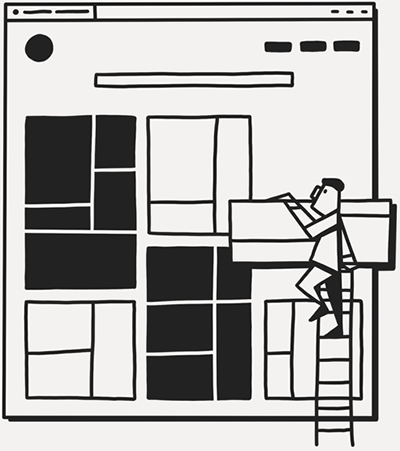

Hello, there.
My name is Scherry and I am a UX/UI designer from Philadelphia enrolled in Thinkful's software engineering bootcamp to better understand what it takes to build the things that I design. I feel like this will help make me a better designer and help me produce designs faster in an agile world. This portfolio will showcase the work I produce on this new engineering journey. Welcome, and thank you for viewing my work. Please feel free to reach out with any feedback.